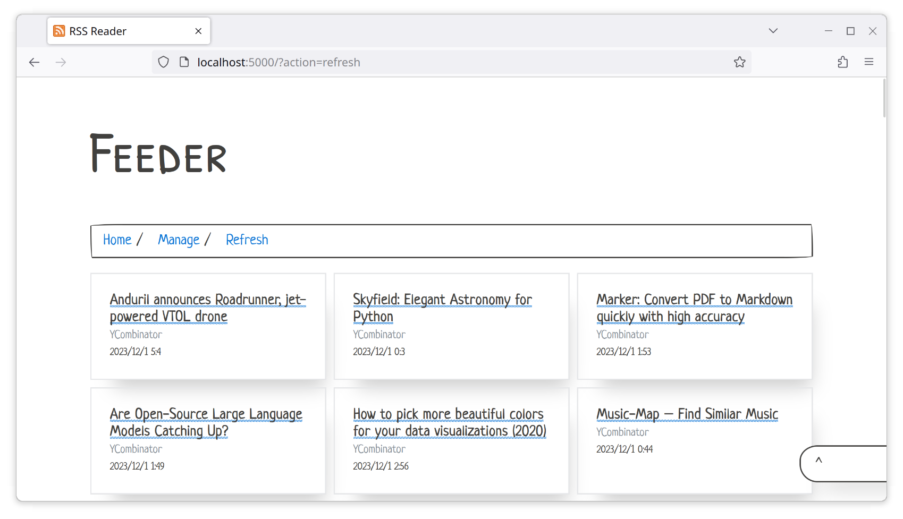

A simple RSS Reader using Flask + Python. It lacks a lot of basic features..but I still use it as me primary reader since other didn't satisfy my needs. I might just use GTK instead of Flask in near future and change database to sqlite.